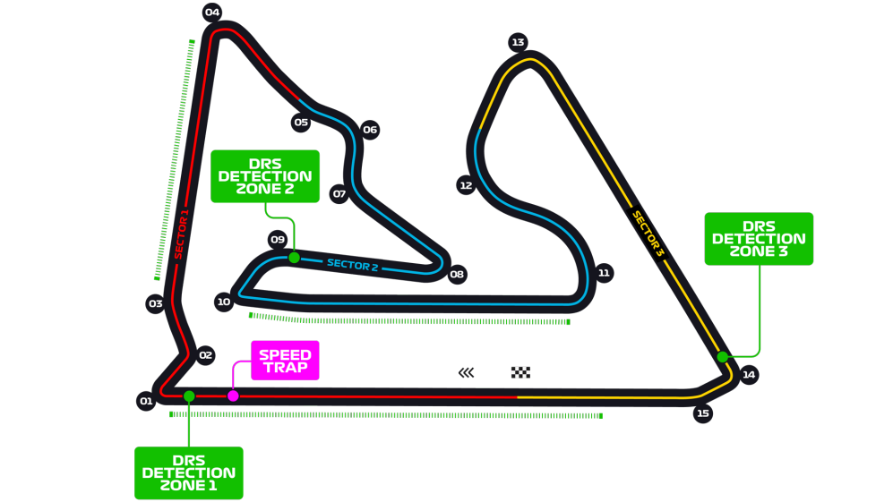

De eerste Grand Prix op de kalender van het 2021 Formule 1 seizoen is het Bahrain International Circuit. De baan werd in 2003 gebouwd en in 2004 werd ook daadwerkelijk de eerste race gereden. Deze werd gewonnen door Michael Schumacher. Tijdens de 1e ronde van de race in 2020 raakte Romain Grosjean betrokken bij een heftig ongeluk, waarbij zijn auto tegen de vangrail aankwam, in tweeën brak, en in de fik vloog. Hier een video om te laten zien hoe heftig het ongeluk was.